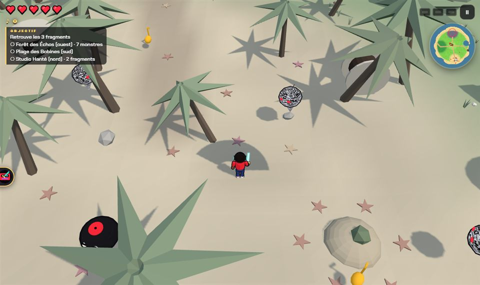
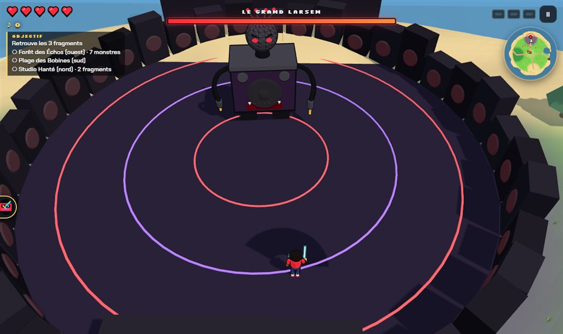
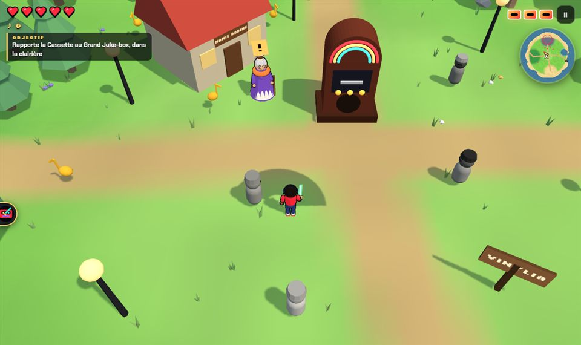

Une île entière en 3D
La Clairière de Vinylia, la Forêt des Échos, la Plage des Bobines, le Lac Miroir et le Studio Hanté : promène-toi librement, une mini-carte te guide.
JACK WORLD · JACK JEU · AVENTURE EN 3D
Une nuit, le Grand Larsen a brisé la Cassette Originelle en trois morceaux. Depuis, l'île de Vinylia est grise et muette. Prends ta Lame Néon, explore l'île en 3D, et rends au royaume sa musique et ses couleurs.
Gratuit, dans ton navigateur, sans compte. Au clavier, à la manette ou au doigt.

L'HISTOIRE
Chaque matin, le Grand Juke-box jouait la Cassette Originelle, et ses notes donnaient vie et couleurs à toute l'île. Jusqu'à cette nuit-là…
La Clairière de Vinylia, la Forêt des Échos, la Plage des Bobines, le Lac Miroir et le Studio Hanté : promène-toi librement, une mini-carte te guide.
Au début, l'île est grise et silencieuse. Chaque fragment retrouvé lui rend des couleurs et un morceau de sa musique.
Ta Lame Néon contre les Gloops en vinyle, les Grésils parasites et les Amplis qui tirent des ondes de son.
Un boss en trois phases : saute par-dessus ses ondes, évite ses salves, et frappe son cœur-enceinte quand il est à bout de souffle.
Des cinématiques, des dialogues avec Mamie Bobine, des secrets, un coffre bien gardé… et une grande fête au Grand Juke-box à la fin.
Ta partie est enregistrée à chaque fragment. Ramasse les notes ♪ (dix notes = un cœur) et termine l'aventure le plus vite possible.
EN IMAGES



COMMENT JOUER
Sur ordinateur, tablette ou téléphone, et à la manette.
ZQSD ou les flèches. Au doigt : le joystick rouge en bas à gauche. Manette : le stick gauche.
J ou clic gauche, ou le bouton ⚔. Elle vise toute seule le monstre le plus proche.
Espace pour sauter, Maj ou K pour esquiver : pendant l'esquive, rien ne te touche.
E ou Entrée quand une bulle apparaît. Au doigt, le bouton ⚔ devient « Parler ». Pause : Échap.
QUESTIONS
Oui. JACK JEU se joue dans ton navigateur, sans compte et sans rien à installer.
Oui : un joystick et des boutons apparaissent à l'écran pour jouer au doigt. Tu peux aussi l'ajouter à ton écran d'accueil comme une appli.
Non, mais il faut un navigateur récent (Edge, Chrome, Safari ou Firefox). La première fois, il faut internet pour charger le moteur 3D ; ensuite, le jeu s'ouvre aussi sans connexion.
Oui, dans le navigateur de cet appareil : elle est enregistrée à chaque fragment, et ton meilleur temps aussi. La languette « Changer de site » permet de sauvegarder ta progression de toutes les applis Jack World dans un fichier.
Regarde l'objectif en haut à gauche et la mini-carte, ou retourne voir Mamie Bobine : elle te remet sur la bonne piste.
Elle est toujours là : joue à la version rétro 2D de La Cassette Perdue.
Trois fragments, un boss, et toute une île qui attend sa musique et ses couleurs.